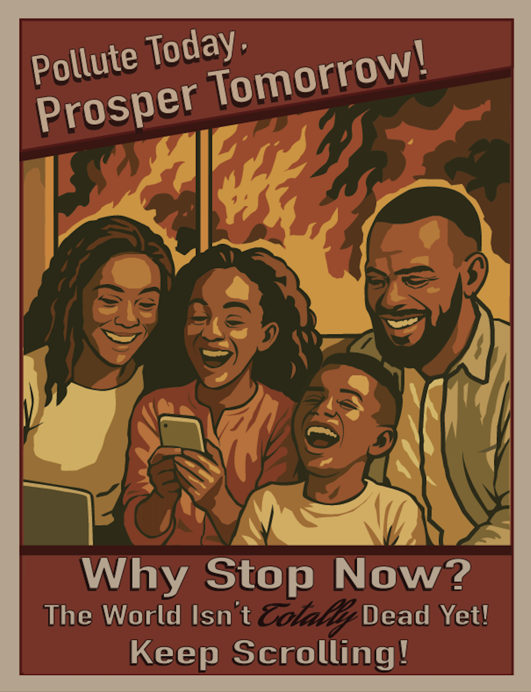

Pollute Today, Prosper Tomorrow

Project Description:
My digital piece "Pollute Today, Prosper Tomorrow!" created on Adobe Illustrator in 2024 is a satirical propaganda-style poster that critiques our modern society's willful ignorance towards climate change and prioritization of overconsumption. The piece depicts an idealized and cheerful family warmly sitting together on a couch, absorbed in the joy of their personal devices. Behind them, a window reveals the exact opposite reality; a sky full of heavy smoke and violent flames. The contrast between the comfortable interior and the chaotic exterior creates a concerning moment of clarity and disruption, urging viewers to face reality and take action. By illustrating a 'picture-perfect' family enjoying their devices together while chaos ensues just behind them, I challenge viewers to examine not just the climate crisis, but the societal normalities that enable it further. The family depicted represents not just an idealized household but a symbol of our culture; one that chooses distraction and comfort over confrontation and responsibility. In showing the tension between cheerful obliviousness and looming catastrophe, I hope to evoke a sense of discomfort that gives both myself and others the opportunity to reflect and question our roles in these systems. This piece asks us a difficult yet necessary question: what will it take for us to look out the window – and care about what we see?